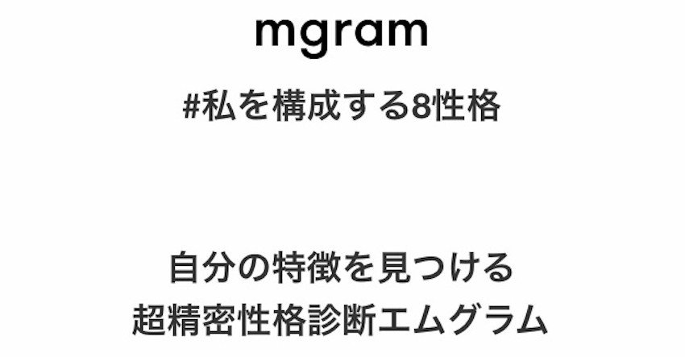
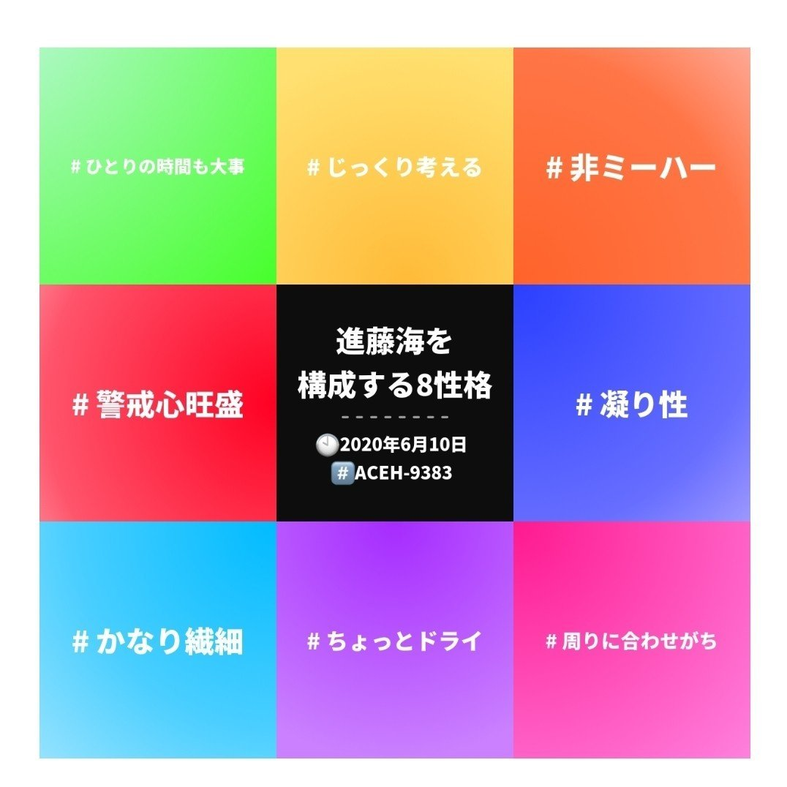
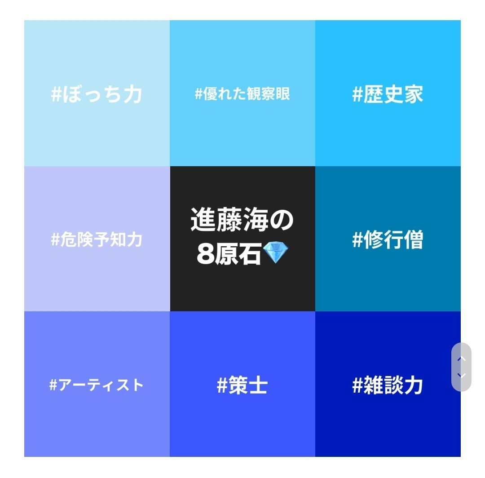
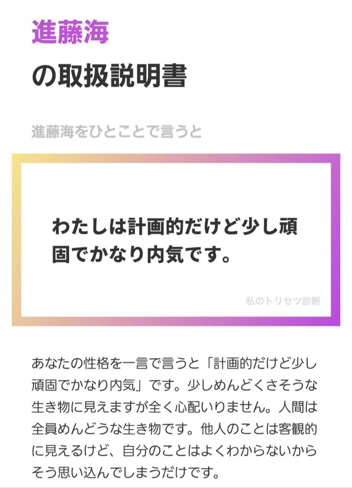
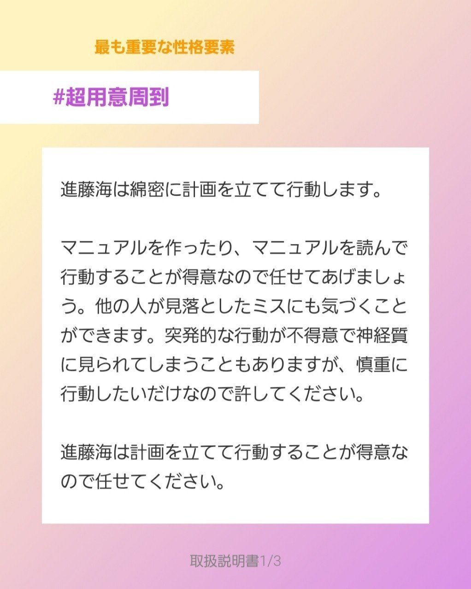
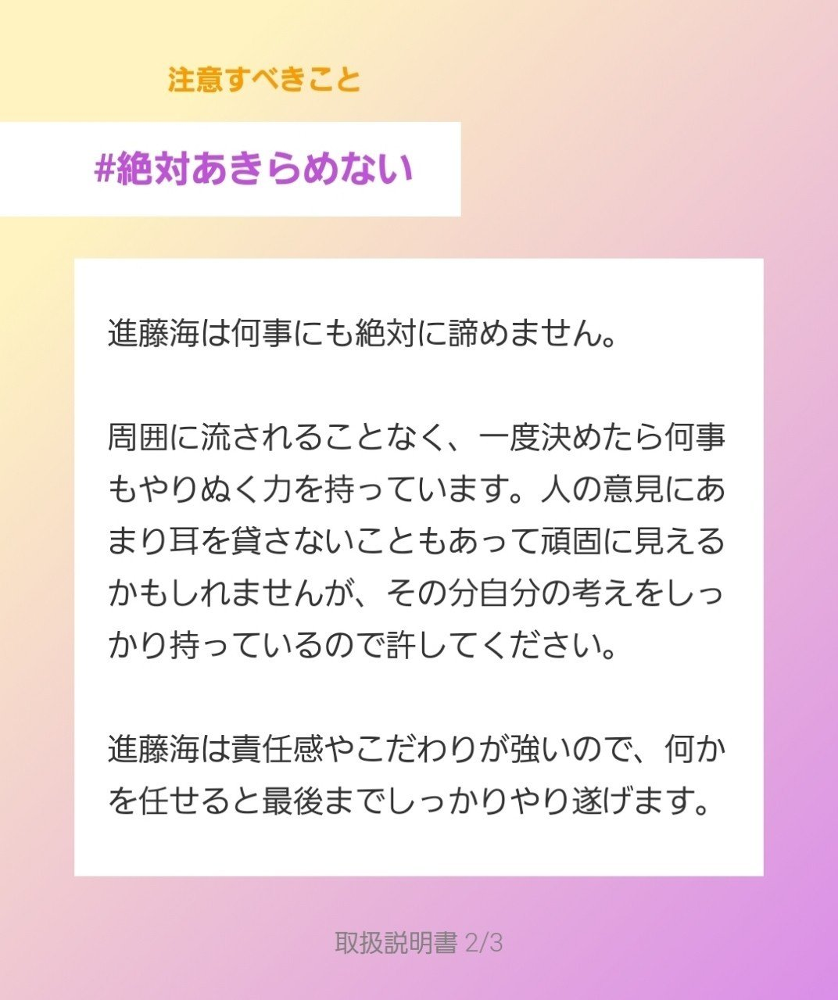
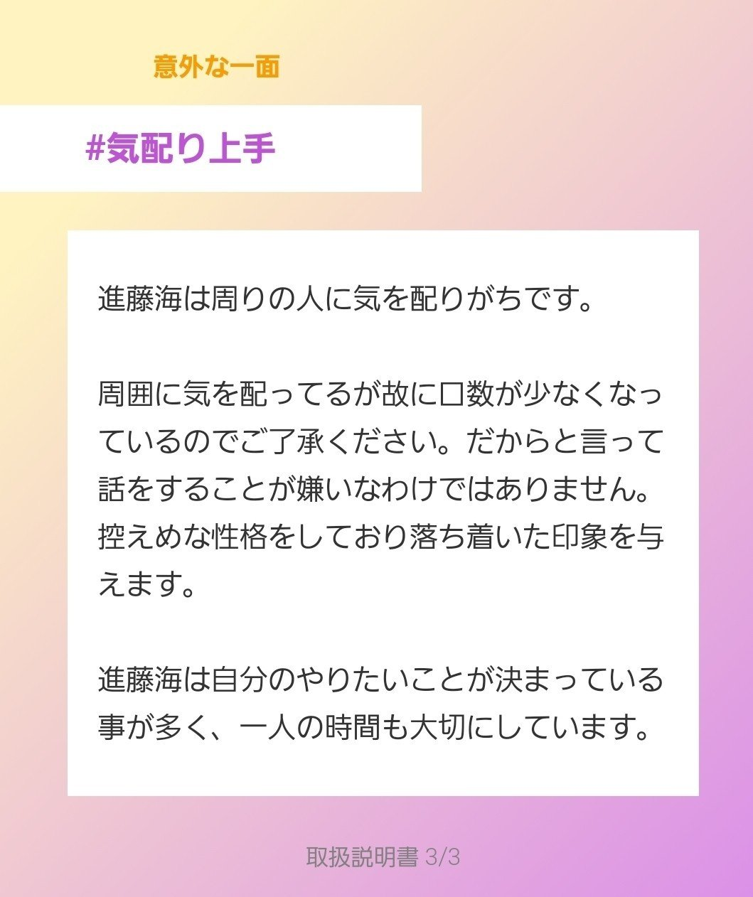

こんばんは。進藤です🌙
世の中には実に多くの性格診断があります。皆さんも一度は受けたことがあるのではないでしょうか。
今回はその中でも「精度が高い！」「自分のトリセツ(取扱説明書)がためになる！」とSNSで話題になっている超精密性格診断・mgram（エムグラム）を受けてみることに！(^_^)/
mgram診断とは？
そもそもmgram診断とはどういったものなのでしょうか。診断サイトに掲載されている説明文を引用してみます。
超精密性格診断mgram（エムグラム）は、企業で用いられる適性検査レベルの高精度分析アルゴリズムにより、あなたを構成する性格要素のうち特徴的な8つをハッシュタグ化して抽出します。世界各国で、900万人以上に利用されている性格診断です。自分の性格や行動に対する周囲の印象がわかるだけでなく、適職診断や恋愛診断などの追加診断も受けることができます。
【引用サイト】『超精密性格診断mgram（エムグラム）』（最終閲覧日：2020年7月4日）https://mgram.me/ja/
ふむふむ。高精度分析アルゴリズムを使用した診断のようですね。また、適職診断や恋愛診断など性格診断以外にも活用できるようです。
では、今回の性格診断の詳細について見ていきましょう。こちらも診断サイトから引用します。
性格診断とはあなたが回答したいくつかの質問結果からあなたのパーソナリティが分かる診断です。現在では企業の適性検査や採用活動にも使われており、日本人の多くが診断結果をもとに自分を見つめ直す機会として性格診断を利用しています。エムグラムの超精密性格診断では客観的にあなたがどんな人なのかが分かるだけでなく、定期的に性格診断を行うことで性格の変化も知ることができます。
【引用サイト】『超精密性格診断mgram（エムグラム）』（最終閲覧日：2020年7月4日）https://mgram.me/ja/
「企業の適性検査や採用活動にも使われている」との記述が！ これは診断精度の高さが窺えます。
確かに就職活動で何度か性格チェックを含んだ適性検査を受けたことがあったのを思い出しました。もしかしたら、もう既にmgram診断を受けたことがあるかもしれません。笑
いざ、診断！
さて、mgram診断の概要も分かったところで実際に診断を受けてみることに！ 全105問(！)ある性格に関するクエスチョンに淡々と答えていきます。
診断内容については著作権上掲載できませんが、回答方法が5段階に分かれている(<例>とても当てはまる,やや当てはまる,全く当てはまらない等)のでハッキリとYes&Noで答える必要がありませんでした…！
どうやらサクサクと(半ば直感的に)答えていく方が精度の高い性格診断になるようなので、進藤もあまり深く考え込まず回答することに。
105問という質問数に最初は驚きましたが、結局10分程度で全て回答することができました！
いよいよ診断結果…
そして、診断結果が出ました！
まずは進藤海を構成する8つの性格について↓

この結果を見た時、思わず「なるほどな」と声に出してしまいました。笑
普段はあまり気にしていなかった自分の素性が言語化されると、誰も見ていないのに恥ずかしい気持ちになります。笑
次は進藤海の8つの原石。「どういうこと？」と思えば、どうやら「自らが秘めているポテンシャル」といった内容のようです。

「ぼっち力」や「策士」はともかく、「修行僧」とは一体…？笑
でも、一言だけでも何となく自らの原石としての意味は伝わってきました。
そして、いよいよ本題！
進藤海のトリセツ(取扱説明書)へ！

うわぁ。当たっていて怖くなりました。
普段の態度や言動から他者に「めんどくさい」と思われているのではないかと考えて自戒することもしばしばあったのですが、そんな日頃の葛藤さえも今回のトリセツには掲載されてしまいました。恐るべし…！



うんうん。気づくと、そう頷きながら診断結果を読んでいる自分が。。笑
今回手に入れたトリセツは自分自身をコントロールする貴重なものでもあるので、暇を見ては読んでおこうと思います。
mgram診断は、上記の性格診断については無料で誰でも受けることができます。さらにサイト内で課金をすれば、より詳しい診断結果について知ることもできるようです。
皆さんも自らのトリセツを手にしてみたら新しい発見があるかもしれません。興味のある方はぜひ試してみてくださいね！